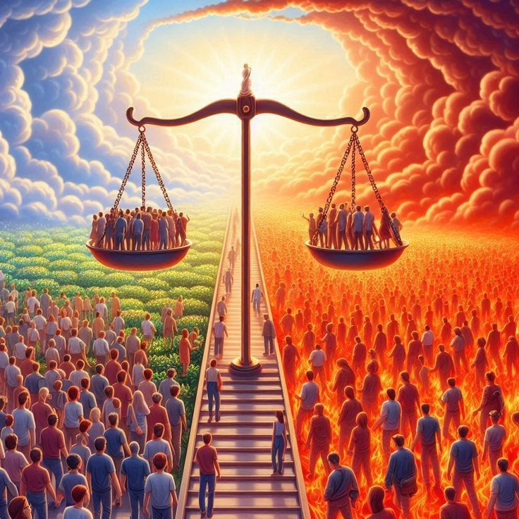
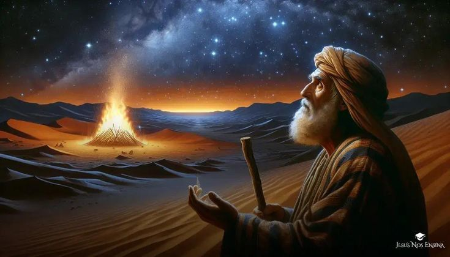
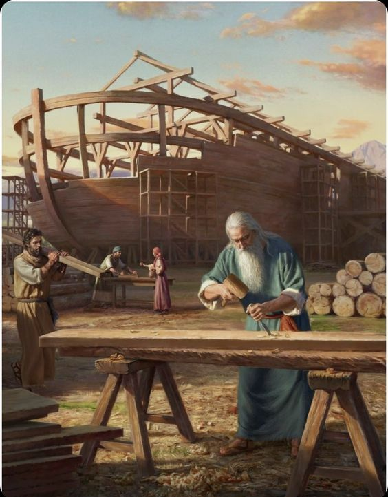
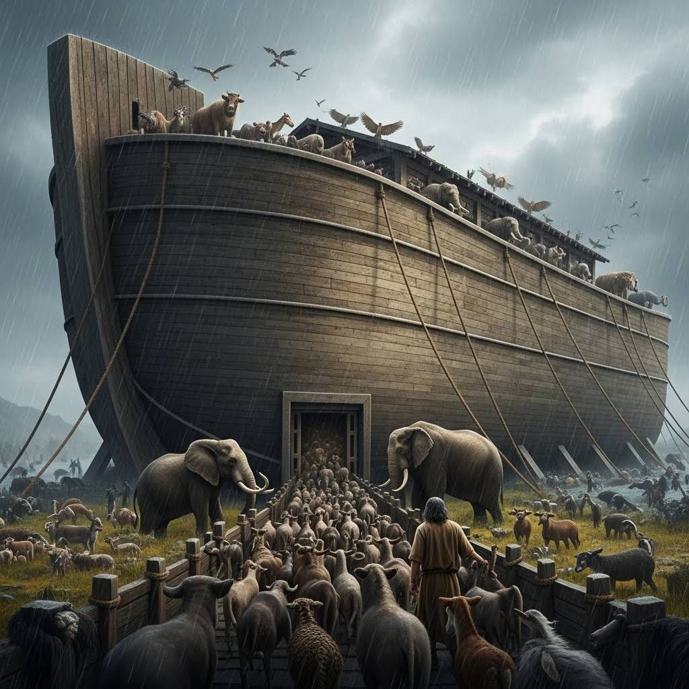
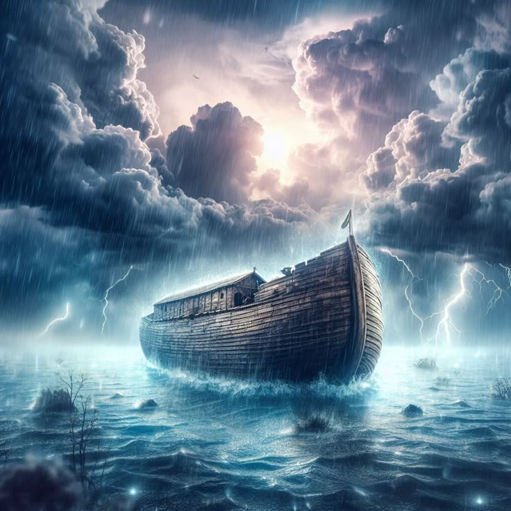
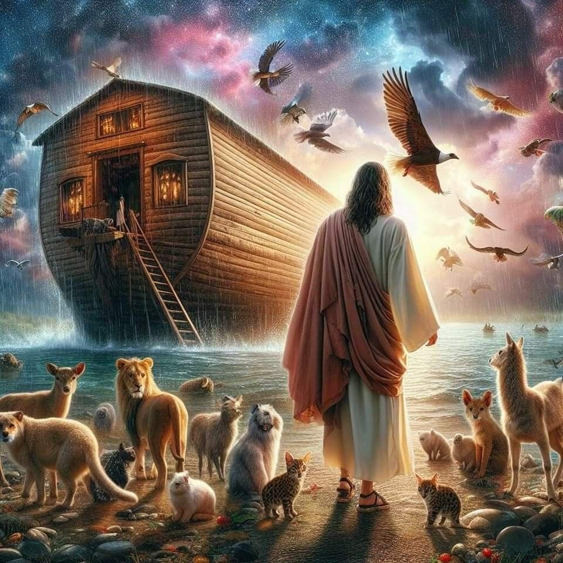
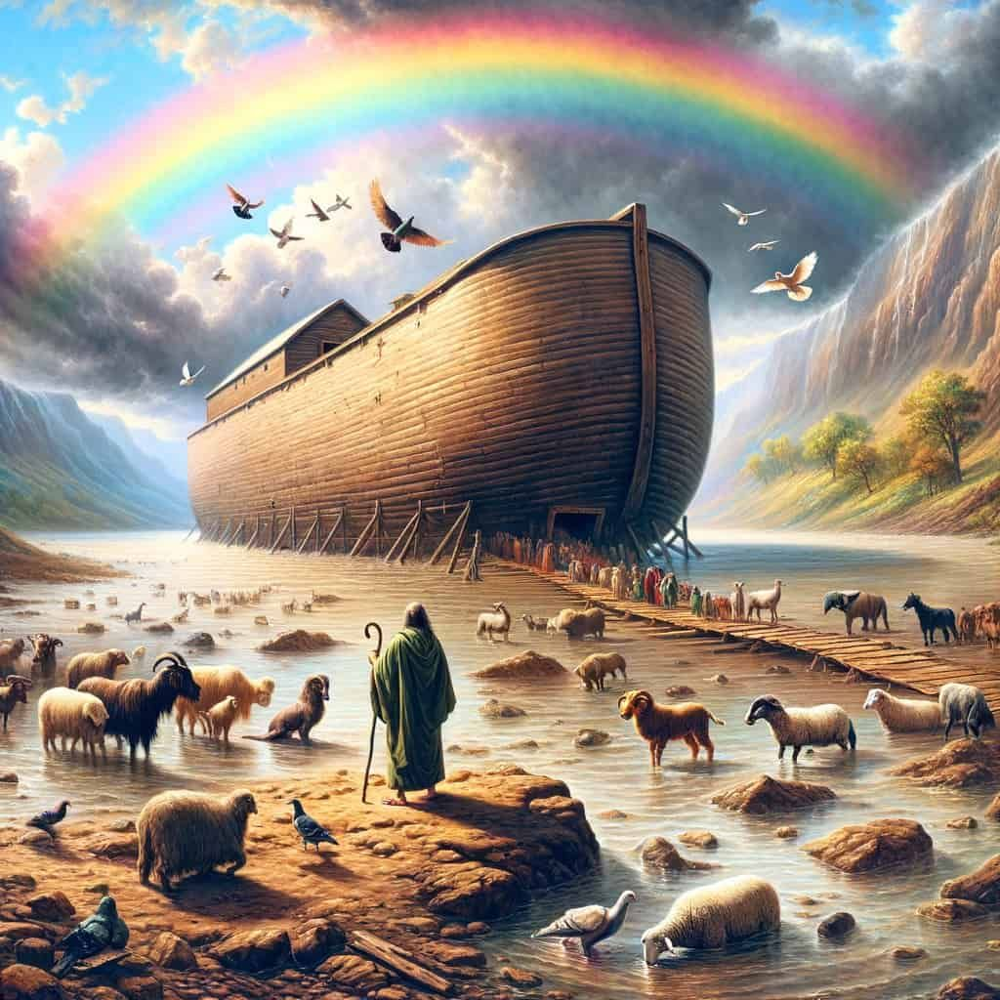

Noah – The Great Ark and God’s Promise
Those who put their trust in God are never forgotten. Even when the whole world turned away, Noah remained faithful — and God remembered him.
The Great Ark and God’s Promise

The World Filled with Sin
உலகம் பாவத்தால் நிரம்பியது
After many years, people forgot God’s ways and lived as they pleased. They filled the earth with lies, violence, and sin. Evil and wickedness spread everywhere. Seeing this, God was deeply grieved. “Humans have turned to great evil. I must renew the world I created,” God decided.
நீண்ட காலம் கடந்து சென்றபோது, மனிதர்கள் தேவனுடைய வழியை மறந்து, தங்களின் விருப்பப்படி வாழத் தொடங்கினர். அவர்கள் பொய்யும் வன்முறையும் பாவங்களும் நிறைந்த வாழ்க்கையில் மூழ்கினர். பூமி முழுவதும் தீமை மற்றும் துன்மார்க்கம் பரவியது. இதைப் பார்த்த தேவன் மிகுந்த துயரப்பட்டார். “மனிதர்கள் இவ்வளவு தீமையில் விழுந்துவிட்டார்கள். நான் படைத்த உலகத்தை புதிதாக மாற்ற வேண்டும்,” என்று தேவன் தீர்மானித்தார்.

God’s Chosen Man – Noah
தேவனின் தேர்ந்த மனிதன் – நொஹா
At that time, only one good man lived — Noah. He was righteous and walked faithfully with God. God said to him: “Noah, I will send a great flood to cover the earth. Build a large ark. You, your family, and two of every kind of living creature will enter it and be safe.” Noah trusted God completely and obeyed His command without doubt.
அந்த காலத்தில் ஒரே நல்லவனாக நொஹா இருந்தான். அவன் நீதிமானாகவும், தேவனுடன் நடப்பவனாகவும் இருந்தான். தேவன் அவனிடம் கூறினார்: “நொஹா, நான் பூமியில் பெரும் வெள்ளத்தை அனுப்புவேன். நீ ஒரு பெரிய கப்பல் கட்டு; அதில் நீயும் உன் குடும்பமும், ஒவ்வொரு வகை உயிரினங்களிலிருந்தும் இரண்டை இரண்டாகக் கொண்டு உள்நுழை.” நொஹா தேவனுடைய வார்த்தையை நம்பினான். அவன் சந்தேகமில்லாமல் தேவனுடைய கட்டளையைப் பின்பற்றினான்.

Building the Great Ark
பெரிய கப்பல் கட்டுதல்
Noah built the ark with strong wood exactly as God instructed. It had many rooms and layers, sealed tightly so no water could enter. His family helped him with the work. People laughed and mocked him: “Flood? You must be crazy!” they said. But Noah kept his faith and finished the ark just as God had said.
நொஹா, தேவனுடைய திட்டப்படி வலிமையான மரங்களால் பெரிய கப்பலை கட்டினான். அது நீர் நுழையாதவாறு பல அடுக்கு அறைகளாக அமைக்கப்பட்டது. அவனுடைய குடும்பத்தினர் அனைவரும் அவனுக்கு உதவினர். மக்கள் இதை பார்த்து நொஹாவை கேலி செய்தனர்: “வெள்ளம் வருமா? நீ பைத்தியமா?” என்று சிரித்தனர். ஆனால் நொஹா தேவனில் நம்பிக்கை வைத்து, கப்பலை முடித்தான்

The Animals Enter the Ark
உயிரினங்கள் கப்பலுக்குள் வந்தது
When the ark was ready, God sent all kinds of animals to Noah — Elephants, lions, tigers, Sheep, horses, cows, Birds, small animals, and snakes — Each came in pairs, male and female, and entered the ark safely.
கப்பல் தயார் ஆனதும், தேவன் உயிரினங்களையெல்லாம் நொஹாவிடம் அனுப்பினார். யானைகள், புலிகள், சிங்கங்கள் ஆடுகள், குதிரைகள், மாடுகள் பறவைகள், சிறிய விலங்குகள், பாம்புகள் ஒவ்வொன்றிலும் ஆண், பெண் என இரண்டாக வந்தன. அனைவரும் கப்பலுக்குள் பாதுகாப்பாக நுழைந்தனர்.

The Rain and the Great Flood
மழையும் பெருங்கடலும்
Then the sky grew dark. Rain began to fall. It rained for 40 days and 40 nights. Waters rose and covered the earth — rivers overflowed, oceans joined, mountains disappeared. Everything on earth was drowned. But Noah, his family, and all the animals were safe inside the ark.
அப்போது வானம் இருண்டது. மழை துவங்கியது. நீர் மெதுவாக பெருகி, ஆறுகளும் கடல்களும் ஒன்றாக இணைந்தன. மழை 40 நாட்கள் மற்றும் 40 இரவுகள் பெய்தது. பூமி முழுவதும் நீரால் மூழ்கியது. மலைகளும், மரங்களும், வீடுகளும் அனைத்தும் நீரில் மூழ்கின. ஆனால் நொஹா, அவனது குடும்பம், மற்றும் உயிரினங்கள் கப்பலில் பாதுகாப்பாக இருந்தனர்

The Waters Recede – A New Beginning
வெள்ளம் தணிந்தது – புதிய ஆரம்பம்
After many days, the rain stopped, and the water slowly went down. Noah sent out a raven, then a dove. The dove returned with an olive leaf — a sign that dry land had appeared again! Soon after, Noah, his family, and all the animals came out of the ark. The world was fresh, clean, and full of new life.
பல நாட்கள் கழித்து மழை நிறுத்தப்பட்டது. நீர் மெதுவாக குறையத் தொடங்கியது. நொஹா ஒரு காகம் மற்றும் பிறகு ஒரு புறாவை கப்பலிலிருந்து விடுவித்தான். புறா சிறிது நேரம் கழித்து ஒரு ஒலிவ் இலை கொண்டு வந்தது — அது நிலம் மீண்டும் வெளிப்பட்டதின் சின்னம்! சில நாட்கள் கழித்து, நொஹா, அவரது குடும்பம் மற்றும் உயிரினங்கள் கப்பலிலிருந்து வெளியே வந்தனர். பூமி புதிய உயிருடன், புதிய நம்பிக்கையுடன் பிரகாசித்தது.

God’s Promise
தேவனின் வாக்குறுதி
Noah built an altar and thanked God for saving them. Then, in the sky, God placed a beautiful rainbow. God said: “I will never again destroy the earth with a flood. This rainbow is the sign of my promise.” It became a symbol of God’s love, protection, faithfulness, and new beginnings.
நொஹா தேவனுக்கு நன்றி சொல்லி பலி அளித்தான். அப்போது தேவன் வானில் ஒரு அழகான வண்ணமயமான வானவில் (Rainbow) தோன்றச் செய்தார் “இனி உலகத்தை மழையால் அழிக்க மாட்டேன். இந்த வானவில் என் வாக்குறுதியின் சின்னம் ஆகும்.” அது தேவனின் அன்பு, பாதுகாப்பு, நம்பிக்கை மற்றும் புதிய தொடக்கத்தின் குறியீடாகியது
" Those who trust in God are always protected. Even in the hardest times, we must never lose faith. Those who obey God’s word will always find victory. Every ending is also a new beginning — just like Noah!"